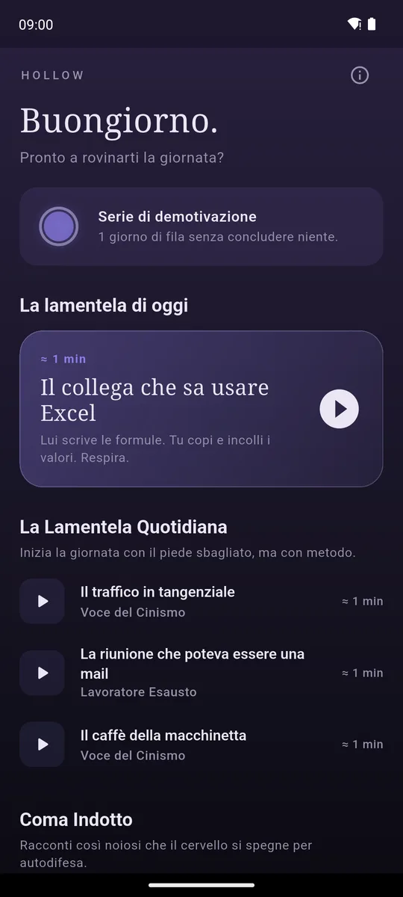
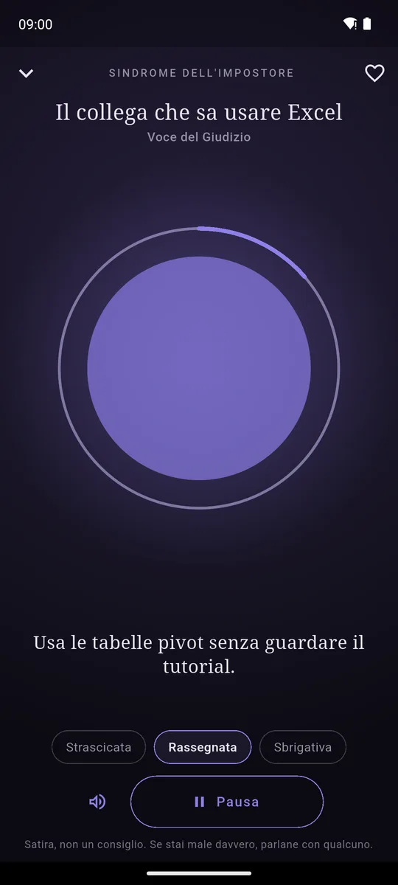
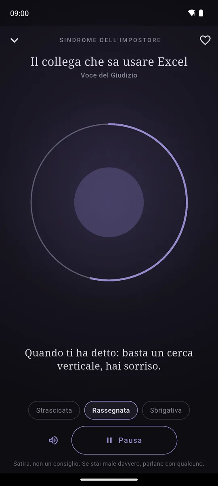

ItalianoEnglish
A calm voice, a breathing violet circle, and rush hour on the ring road. Tap a session and it starts: get comfortable, as comfortable as you can be after twenty minutes in a queue.

A new complaint at the top every day. 
The full circle every calm app promises. 
Then it empties, sentence by sentence.
Eighteen sessions, six categories
- The Daily Complaint — rush hour, the meeting that could have been an email, coffee from the vending machine.
- Induced Coma — the annual report, the terms of service, the minutes of the residents' meeting. Read slowly, until you drop.
- Guided Demotivation — lowering your expectations, "starting Monday, everything changes", a body scan of tiredness.
- Toxic Love — seen at 11:14, dinner at the in-laws', your ex is doing great.
- Impostor Syndrome — they'll find out on Thursday, the colleague who knows Excel, "great question".
- Freelance Life — quarterly taxes, the client who pays in 120 days, the holiday with a laptop.
About a minute each. Three voice paces — drawling, resigned, hurried — instead of a slider. The demotivation streak counts the days in a row you opened the app and got nothing done. In English and Italian, following the phone's language: the English sessions are rewritten, not translated.
The circle that empties
Every meditation app has a full, glowing circle for a logo. Hollow's starts that way, and as the voice reads it empties word by word: the violet fades, the glow goes, and in the end there is a ring around a dot. The home screen greys a little every hour too, from six in the morning to midnight, without anyone touching it.
The voice is your phone's text-to-speech: no recordings. If the phone has none, the sessions show on screen, at the same pace.
It's satire, and it says so
Hollow does not relax you and does not treat anything. It makes fun of mindfulness apps, not of the people who use them. It says so at the bottom of the home screen and under every session: "Satire, not advice. If you are really struggling, talk to someone."
If you actually want to relax, there is Breathe: a circle that breathes with you, also ours, no irony.
Your data stays yours
Favourites, streak, pace and sound stay on the phone. No account, no server of ours. The only things that leave the phone are the data Google AdMob collects for ads and — if the phone's speech engine works online — the session texts, which are the same for everyone. It is all in the privacy policy.
How it pays for itself
With a banner anchored at the bottom and, now and then, a full-screen ad only after a session listened to the end — never while the voice is reading, never before. No subscription.
Where to get it
Not on Google Play yet. When it is, the link will appear here.